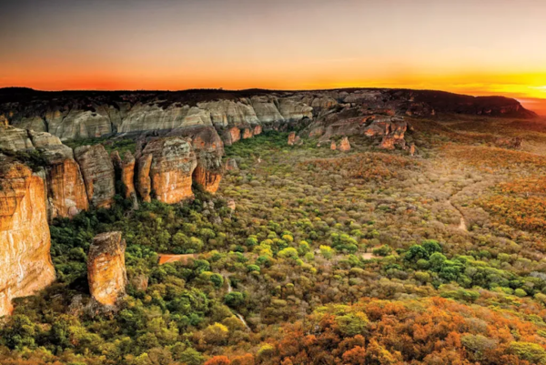

Serra da Capivara: Uma Viagem pela História e Beleza Natural
O Parque Nacional da Serra da Capivara, no Piauí, é um tesouro da história e da natureza brasileira. Reconhecido pela UNESCO como Patrimônio Mundial, o parque abriga sítios arqueológicos com mais de 30 mil anos de idade, repletos de pinturas rupestres que contam a história da vida e da cultura dos primeiros habitantes da América.
A região é um paraíso da biodiversidade, com uma variedade impressionante de fauna e flora, incluindo espécies raras e ameaçadas de extinção. Além da riqueza natural, a Serra da Capivara guarda a memória das culturas indígenas que a habitaram por milênios, com tradições e costumes que ainda influenciam a região.
Para os visitantes, o Parque oferece uma experiência única, com trilhas que cruzam paisagens desérticas e cachoeiras, museus que contam a história da região e a chance de admirar a beleza natural e a importância histórica da Serra da Capivara. É um lugar para se conectar com o passado, apreciar a natureza e descobrir um dos mais importantes patrimônios culturais do mundo.
A Serra da Capivara é muito mais do que um parque nacional. É um palco de uma história milenar, um santuário da biodiversidade e um centro cultural vibrante. Vamos explorar alguns aspectos que tornam essa região tão especial:
A História Esculpida na Pedra
Arte Rupestre as pinturas rupestres da Serra da Capivara são verdadeiras janelas para o passado, retratando a vida, os costumes e as crenças dos primeiros habitantes da América. São mais de 300 sítios arqueológicos com milhares de pinturas, datadas de 10.000 a 50.000 anos atrás.
Descobertas Arqueológicas
As escavações na Serra da Capivara revelaram um acervo riquíssimo de ferramentas, cerâmica, ossadas e outros artefatos, que fornecem informações valiosas sobre a evolução da humanidade na América. Importância para a Ciência. A Serra da Capivara é um laboratório a céu aberto para arqueólogos, antropólogos e historiadores, que estudam a evolução humana e as primeiras culturas americanas.
Um Berço da Biodiversidade
Fauna Rica a Serra da Capivara abriga uma grande variedade de animais, como onças-pintadas, jaguatiricas, araras-azuis, veados-catingueiros, capivaras e outros mamíferos, aves e répteis.
Flora Adaptável
A vegetação da Serra da Capivara é típica do bioma Caatinga, com plantas adaptadas ao clima semiárido, como cactos, árvores de pequeno porte e arbustos espinhosos. Ameaças e Conservação: A fauna e flora da Serra da Capivara enfrentam ameaças como desmatamento, caça ilegal e a introdução de espécies exóticas. O Parque Nacional desempenha um papel fundamental na proteção da biodiversidade da região.
Cultura Viva
Povos Indígenas a região abriga comunidades indígenas que preservam tradições milenares, como a arte, a música, a dança e a medicina tradicional.
Artesanato Local
A Serra da Capivara é conhecida pela produção de artesanato tradicional, como cerâmica, cestaria, tecelagem e joias.
Festivais e Eventos
A